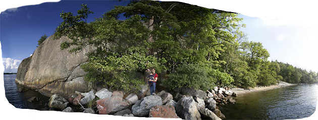
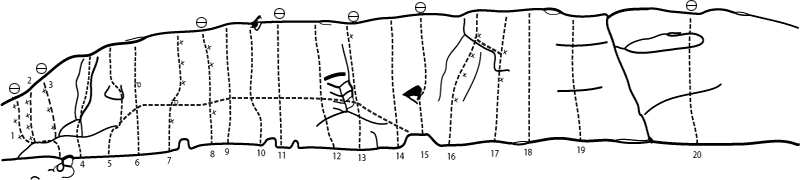
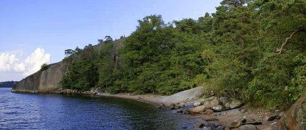

Kulberget
Lat: 59.32384
Long: 18.18250

Niclas
och
David
poserar framför Kulberget. Foto:
Per Lindh
Allmänt
Strandnära sva-klättring. Klippan används troligen inte så ofta då flera delar av den kan vara mossig/lavbeväxt/barrig. Men fin greppsnål klättring med bra friktion.
Klippan fick en översyn av bultkommittén 09 i samråd med Nacka kommun. Alla 8mm borrbultar och pitonger ersattes av syrafasta expandrar och hängare, lackerade för att synas så lite som möjligt. Ingen förstärkningsbultning skedde. Ett par extra ankare sattes också upp för att skona de stackars små träd som finns ovan klippan. Klippan har i och med detta också blivit betydligt mer topprepsvänlig.
September -11 fick klippan sig en ordentligt rensning då, i princip, alla leder blev rensade på den mossa som börjat ta över klippan.
Vägbeskrivning
<div style="width: 355; float: right; margin-left: 10px; padding: 3px; border: solid 1px #cccccc;">
<googlemap width=350 height=300 lat="59.32384" lon="18.18250" zoom="14" type="map" controls="small">
59.32384,18.18250,
Kulberget
</googlemap>
</div>
<div style="float: right; margin-left: 10px;">
<slresa>
titel=Kulberget
lat=18182500
long=59323840
</slresa>
</div>
Åk väg 222 mot Nacka/värmdö.
Tag av mot Nacka Strand sedan vänster i rondell och korsa motorvägen.
Höger i nästa rondell och sedan följ skyltar mot Nyckelviken.
Följ grusvägen ett par km och parkera vid parkeringen till vänster efter skylt "Lilla Nyckelviken".
Följ tydliga stigen från baksidan av parkeringen ner mot vattnet. Klippan ligger precis vid stranden och borde synas efter ca hundra meter. Gå antingen ut på höjden för att fira ner, eller ta första mindre stigen till vänster för att komma till klippans nederkant.
Leder

- 1
- Vildanden
- 6c+
- Bultlinjen längst till vänster. Traversera längst vattenbrynet och se upp för ilskna svanar och svallet efter finlandfärjorna!
- 4
- Kulberget the hard way
- 5a (5-)
- Den högra av de uppenbara sprickorna.
- 5
- In vino veritas
- 6a+ (6)
- Hangla in från vänster, sedan rakt upp via en hylla.
- 5a
- Vattensängen
- 6a+ (6)
- En större variant av ''Himlasängen'' i Tunaberg. Starta som ''In vino veritas'' men fortsätt hangeln i tvärsprickan till insteget på ''Ni glömde den här''. Kilar, en massa friends och en borrbult på ''Peer Gynt''. Bra, men inledningsvis något svårfunna, säkringar.
- 7
- Peer Gynt
- 6c+
- Bultat, men ganska glest mellan bultarna. 130510: Numera 6 bultar.
- 11
- Suicidal tendencies
- 6a (6-)
- Helt osäkrad förutom ett friendläge i början. Går inte ihop med nr 12 som skissen i Stockholmsföraren visar utan rakt upp hela vägen. Kul topprepsled.
- 13
- Sträckbänken
- 6a+ (6-/6)
- Firningsankare. Följ diedret i starten och sprickan upp tills sprickan i princip försvinner och du är framme vid kruxet. Namnet på leden blir solklart då kruxet vid bulten skall passeras.
- 14
- Gröna ängen
- 6a+ (6)
- Kan nyttja Sträckbänkens firningsankare. Fin men rätt tung led då greppen är bra men rätt sparsamt placerade. Delvis borstad 090420.
- 15
- Ni glömde den här
- 5c (5+)
- Firningsankare. Följer sprickan upp.
- 16
- Brand
- 7b (8-/8)
- Känslig klättring med ett barskt krux.De flesta gör leden med enbart borrbultarna, men det går att lägga ett par friends.
- 17a
- Parasiten
- 6b (6/6+)
- Starta med ''John Gabriel Borkman'' och koppla första bulten. Gå sedan ner lite och runda kruxet till höger, nästan inne i ''I väntan....'' Följ sedan diederet till topps - dvs. samma utsteg som ''Brand''. Betydligt mer logisk linje än skissen låter antyda. Tidigare toppad av Mattias Brunk.
- 18
- I väntan på magdansaren
- 5a (5-)
- Osäkrad
- 21
- En folkfiende
- 6a+
- Struntlill höger om ''The pfeiler''. Alldeles för högt till första bulten.
Kategori:Stockholm
Kategori:Mix
Kategori:Trad
Kategori:Sport
Kategori:Sva
Bilder

Kategori:Nacka-Värmdö
Kategori:Stockholm
Kategori:Mix
Kategori:Trad
Kategori:Sport
Kategori:Sva